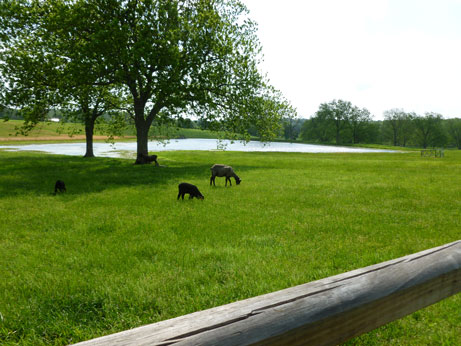
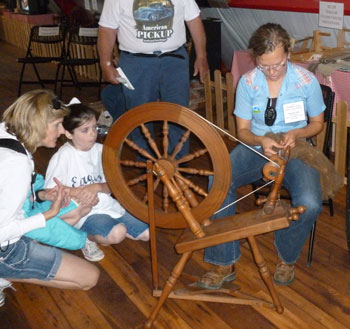
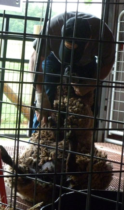
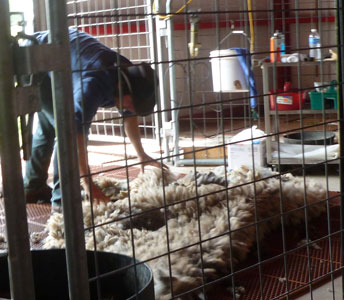
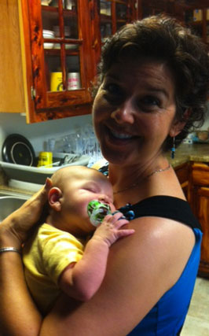
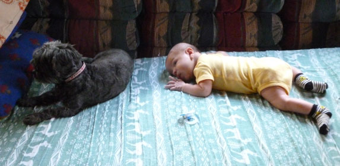
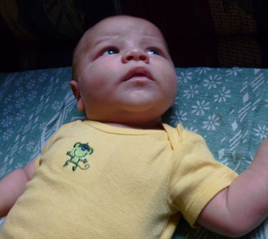
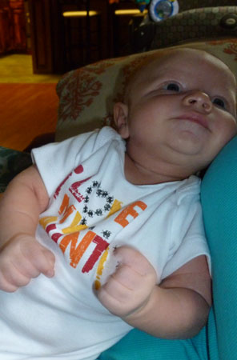

April 27, 2012
| I took a Friday off in late April to visit
Shepherd's Cross sheep farm. They have an annual "Wild &
Wooly Weekend" in which they do sheep shearing demonstrations.
This year they were also doing an event they called, "Sheep to
Shawl." You could watch a sheep being sheared, could see where
they wash the wool, then learn how they card it, watch it being spun into
yarn, and watch them knitting the yarn into a shawl. During the
course of the weekend, an entire shawl would be made from the wool they
had just sheared. It was a neat learning experience. It made
me want to learn how to card, spin, and knit.
After that, I went to Keith & Desirae's house for a visit. I
had complained that every time I've seen Brodie he's just slept the whole
time. So he obliged me by staying awake most of this visit - but it
was to cry! I was OK with it though, I just wished that I could
comfort him. He is having some colic issues and there's just no
soothing him when it strikes. I changed my first diaper and fed him
a bottle. After failing on all 16 of my nieces and nephews on Eric's
side, I'm finally being a real aunt! |
|
 |
 |
| Shepherd's Cross sheep farm in Claremore, OK | Wool spinning demonstration using a spinning wheel. |
 |
 This big sheet of wool came off of that one sheep. |
| Sheep shearing - when they sit the sheep on its butt like this, it stays perfectly calm. Very neat! |
|
 |
 Brodie and his big sister share the couch |
| Here I am with Brodie - he's resting right then. | |
 Where's that Mommy person? I sure love her. |
 Yeah, Mom's the BEST. |